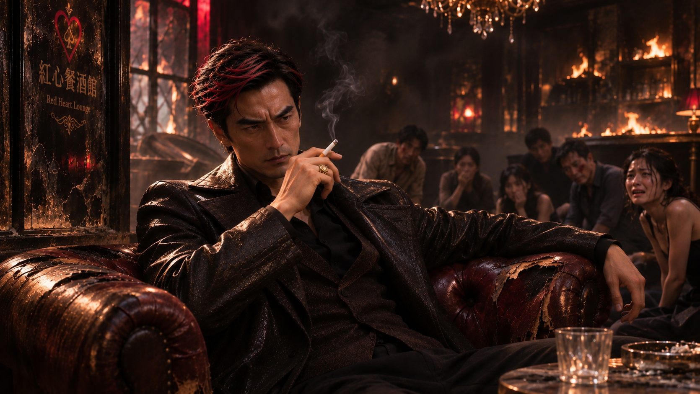
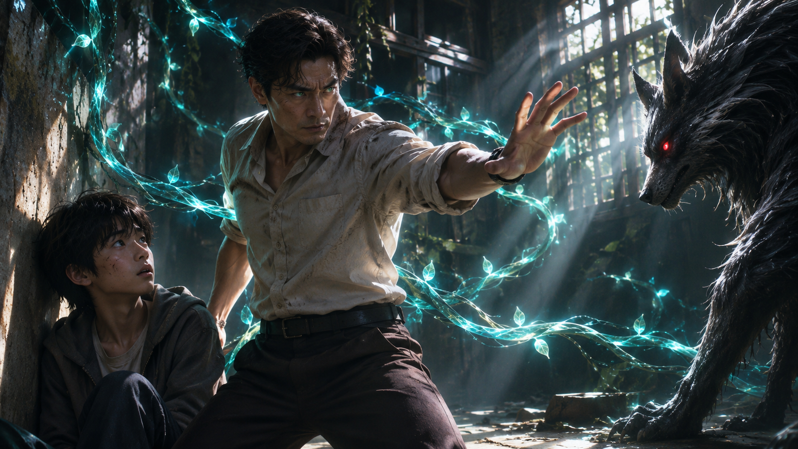
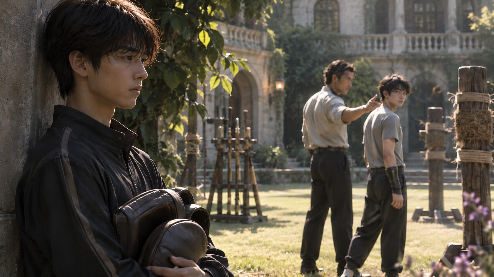
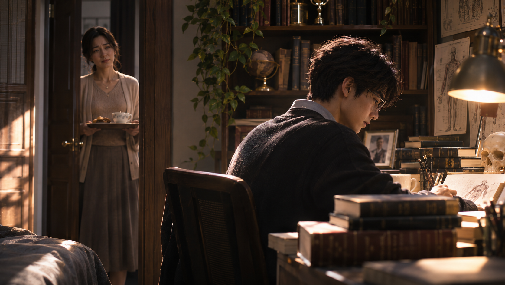
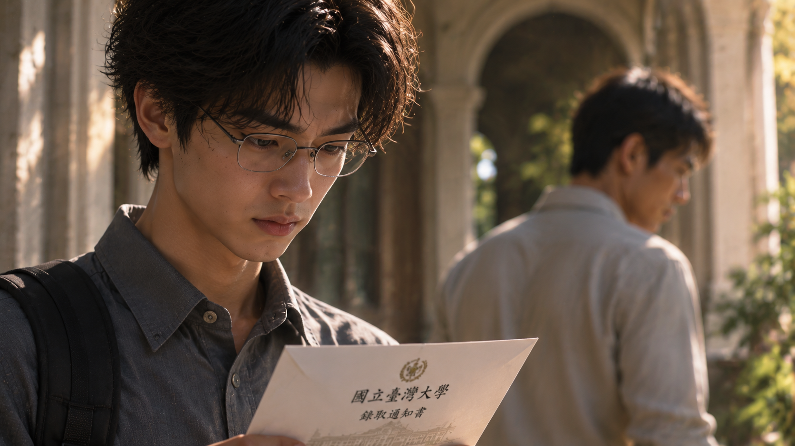
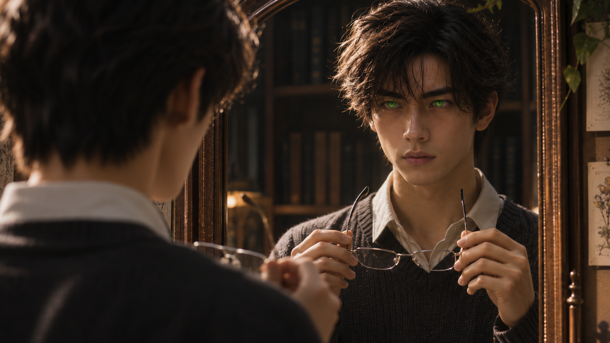

WHITE MAGIC ART STUDIO
第九章
沒有度數的眼鏡
時間回到現在，
「真搞不懂你們人類……」
炎君坐在紅心餐酒館的沙發上，百無聊賴地把玩著一根香菸。

他將香菸舉到眼前，端詳了片刻，忽然笑了。
「明知道這東西有害健康，卻還是離不開它。怎麼？你們的命，對自己來說就這麼不值錢嗎？」
沒有人回答。
餐酒館裡，十幾個人擠在牆邊，連呼吸都小心翼翼，深怕引起眼前這名男子的注意。
距離蔣國華離開，已經將近二十四個小時。
按照炎君訂下的規則，每過四小時，就會有一個人失去性命。
到目前為止，已經有五個人沒能等到國華回來。
炎君瞥了一眼牆上的時鐘。
「哎呀……」
他放下香菸，慢悠悠地站起身，伸展了一下肩膀。
「再過一分鐘，又是四個小時了呢。」
他望向縮在牆邊的眾人，露出愉快的笑容。
「來看看，這次輪到誰？」
「不要……大人，求求您……」
有人忍不住哭著求饒。
炎君歪了歪頭。
「別這麼緊張嘛。人終究都會死，我只是讓你們早一點知道自己的時間到了。」
他的視線在人群間游移，最後停在一名手臂刺青的男子身上。
「就你吧。」
炎君抬起手，指尖浮現一簇火苗。
那名男子嚇得連連後退，卻被身後的牆壁擋住去路。
然而，就在炎君準備有所動作時，他忽然停了下來。
「嗯？」
他轉頭望向餐酒館的大門。
片刻後，指尖的火焰悄然熄滅。
「看來，你的運氣還不錯。」
話音剛落，封鎖餐酒館的火牆便向兩側散開。
蔣國華帶著幾名手下，神色匆忙地衝了進來。
「大、大人！我們查到了！」
最後一人踏進餐酒館後，火牆再次升起，將大門封得密不透風。
炎君回到沙發前坐下。
「說吧。」
國華連忙遞上一份文件。
「我們查過台北所有叫梁景皓的人。符合您提供條件的，只有一位。」
「哦？」
「只是……這個人的身分，有點特殊。」
炎君抬起眼。
「國華。」
「是！」
「我給你的時間，是拿來找人的，不是拿來練習怎麼說話的。」
國華渾身一僵。
「是、是！這名梁景皓，就是茂陽集團董事長梁晉輝的大兒子！」
炎君原本漫不經心的神情，終於有了些變化。
「繼續。」
「據我們查到的消息，他大約十年前就離開梁家，之後幾乎沒有公開露面。這件事在茂陽集團內部似乎也是個禁忌，很少有人願意談起。」
「所以呢？」
「所以……目前還沒找到他的確切下落。」
炎君靜靜地看著他。
國華額頭冒出冷汗。
「不、不過！我們還查到一件事！」
炎君沒有回答，只是微微抬起手。
幾縷火光從他的髮絲間閃過。
「明天！」國華連忙喊道，「明天是茂陽醫院三十週年慶！董事長會親自出席，而且據說還會宣布新任院長的人選！」
「然後？」
「傳聞接任院長的，是梁晉輝的二兒子——梁景毅。」
「二兒子……」
炎君輕輕念了一遍這個稱呼。
「也就是說，梁景皓還有個弟弟。」
「是的，大人。」
炎君低頭看著文件，嘴角漸漸揚起。
「有意思。」
他將資料放到桌上。
「一個離家十年的長子，一個準備接掌醫院的次子……梁家還真是熱鬧。」
國華趕緊附和。
「說不定梁景皓會趁這次週年慶，帶著兒子一起出席！」
炎君抬眼看他。
「國華，你覺得一個十年不願回家的人，會突然想參加這種活動嗎？」
「這……」
「不過，你倒是提醒了我一件事。」
炎君攤開手掌。
一團金色火焰在掌心浮現，逐漸收束，最後凝成一枚小巧的金色橢圓體。
國華望著那東西，不敢出聲。
「明天，你親自去一趟茂陽醫院。」
炎君將金色物體放到桌上。
「找到梁景毅，把這個放到他身上。」
「這是……？」
「你不需要知道。」
炎君輕輕一笑。
「只要讓它碰到衣服，它自然就會附著上去。這麼簡單的事情，你應該辦得到吧？」
國華猶豫了一下。
「大人，可是……以我的身分，要進入那種場合，恐怕不太容易……」
炎君望著他，忽然露出恍然大悟的表情。
「啊，對耶。」
國華心中一喜。
「那、那是不是可以……」
「我差點忘了，你需要一個更合理的理由。」
炎君站起身，走到國華面前。
「國華。」
「是……」
「你該不會以為，找到這份資料，就算完成任務了吧？」
他伸手搭上國華的肩膀，隨後輕輕握住對方的手腕。
國華的表情瞬間變了。
「大、大人……？」
一股灼熱感突然從手腕傳來。
國華痛得跪倒在地，發出慘叫。
炎君鬆開手，神情卻依然輕鬆。
「放心，我只是幫你找個能進醫院的理由。」
他轉頭看向一旁早已嚇得說不出話的手下。
「欸，那邊的。」
那人猛地抬頭。
「還愣著幹嘛？快叫救護車啊。」
炎君笑著指了指國華。
「有人需要去全台最優秀的醫院報到了呢。」
他重新蹲下身，靠近國華耳邊。
「記住，明天。」
炎君的聲音很輕。
「別再讓我失望了，我忠心的國華。」
二十年前｜宜蘭某社區
那一年，梁景毅還只是個國中生。
某個午後，他和幾名朋友在社區空地打棒球。
輪到景毅打擊時，他用力揮棒，球卻偏離了預想的方向，越過圍牆，落進附近一棟老舊房屋的院子裡。
「哇！梁景毅，你打去哪裡啦？」
「我去撿就好。」
景毅將球棒交給朋友，獨自繞到老屋門前。
那棟房子已經很久沒有人居住，院子裡雜草叢生，鐵門上滿是鏽跡。
「不好意思，有人在嗎？」
他敲了敲門。
沒有回應。
正準備再敲一次時，大門卻隨著他的動作緩緩推開。
「……沒鎖？」
景毅探頭往裡面看。
棒球就落在玄關不遠處。
他猶豫片刻，還是走了進去。
「我撿個球就走……」
然而，就在他彎下腰的瞬間，一股強大的力量突然從屋內襲來！
景毅整個人失去平衡，重重撞上牆邊。
「呃……！」
他跌坐在地，頭暈目眩。
還沒來得及弄清楚發生了什麼，黑暗深處便傳來一陣低沉的呼吸聲。
景毅勉強抬起頭。
一雙猩紅色的眼睛，正從陰影里盯著他。
那是一頭外形近似巨狼的怪物，四肢異常粗壯，張開的嘴裡露出尖銳的牙齒。
景毅僵在原地。
他從小就聽過惡魔的故事。
但直到這一刻，他才第一次真正明白，父親口中的那些怪物究竟是什麼模樣。
怪物壓低身體，準備朝他撲來。
下一秒，地面突然傳來劇烈的震動。
數條粗壯的藤蔓破土而出，迅速纏住怪物的四肢！
「武兒！退後！」
熟悉的聲音從門口傳來。
景毅轉過頭。

「爸……？」
梁晉輝站在門邊，雙眼散發著翠綠色的微光。
他抬起手，更多藤蔓從牆壁與地面延伸而出，將那頭怪物牢牢固定住。
「還能站起來嗎？」
景毅點了點頭，卻發現雙腿仍有些發軟。
晉輝走到他身前，確認兒子沒有受到嚴重傷害後，才重新望向那頭怪物。
「武兒，看清楚。」
景毅抬起頭。
「這就是我們的宿敵——惡魔。」
怪物不斷掙扎，藤蔓隨之發出緊繃的聲響。
「你還記得，我以前告訴過你什麼嗎？」
景毅吞了吞口水。
「我們……是繼承木之力的聖術師。」
「還有呢？」
「我們的力量，是為了保護人類、對抗惡魔……」
晉輝點了點頭。
「沒錯。」
他將手掌伸向前方。
木質的紋理沿著手臂浮現，隨著聖術運轉，數根堅硬的木刺從藤蔓間延伸而出，擊中了被困住的惡魔。
怪物發出最後一聲低吼，身形逐漸崩解，化為黑色塵埃，消失在昏暗的屋內。
景毅怔怔地望著眼前的一切。
許久，他才低聲問：
「爸……」
「嗯？」
「我以後，也能像你一樣嗎？」
晉輝回頭看著兒子。
片刻後，他露出一抹笑容。
「當然可以。」
他伸手揉了揉景毅的頭。
「明天開始，放學後跟你哥一起來練習吧。」
景毅抬起頭，眼睛亮了起來。
「真的？」
「真的。」
那是景毅第一次親眼見到父親驅魔。
也是他第一次如此迫切地希望，自己有一天能成為像父親一樣強大的聖術師。
從那天起，景毅開始和哥哥景皓一起接受父親的訓練。
無論是武術、聖術，還是與惡魔交戰時的判斷，景毅都學得非常認真。
他的進步速度甚至讓晉輝感到驚訝。
短短幾個月，景毅便逐漸追上了比自己年長的哥哥。
某次訓練結束後，晉輝忍不住稱讚：
「很好，武兒！你最近進步得很快。」
景毅擦去額頭上的汗水。
「謝謝爸。」
「再這樣下去，說不定哪天真的會比我還厲害。」
晉輝笑著拍了拍他的肩膀。
「真希望你哥能多像你一點。」
景毅愣了一下。
隨後，他也笑了。
那一天，他記住了父親的稱讚。
他開始相信，只要自己足夠努力、足夠優秀，總有一天，就能成為讓父親真正引以為傲的人。
然而，隨著景皓升上高中，一切逐漸發生了變化。
晉輝開始將更多時間投入長子的訓練。
原本兄弟倆一起進行的課程，漸漸變成景皓一個人的特訓。
這天，對打才進行不到半小時，晉輝便突然停了下來。
「好了，武兒，今天先到這裡。」
景毅愣住。
「可是爸，我們才剛開始沒多久……」
「你哥最近有些地方需要加強，我要另外安排訓練。」
晉輝說得理所當然。
「你先回去休息吧。」
坐在一旁的景皓聞言，忍不住嘆了口氣。
「又要特訓喔……」
晉輝看向他。
「有意見？」
「沒有啦。」
景皓站起身，經過弟弟身旁時，低聲說了一句：
「相信我，我真的很羨慕你。」
說完，他便跟著父親走向練武場。
景毅留在原地。
他看著哥哥的背影，心裡卻浮現一個無法理解的疑問。
明明我做得比較好……
為什麼需要更多訓練的人，反而是哥哥？

幾天後，景毅來到母親的花院。
張慧萍正在整理桌上的花材，看見兒子走進來，露出驚喜的笑容。
「哎呀，今天怎麼有空來找媽媽？」
「沒什麼……」
景毅拉開椅子坐下。
「只是有件事想問妳。」
「什麼事？」
「木翼。」
慧萍停下手邊的動作。
「木翼？」
「嗯。」
景毅抬頭看著她。
「那到底是什麼？」
慧萍微微一怔，隨即放下剪刀，替兒子倒了杯茶。
「你爸沒跟你說過嗎？」
景毅搖頭。
「六大聖術師家族，每個世代都會誕生一位特別的聖術師，繼承拉比所賜下的『翼』，引領同代的聖術師。」
慧萍將茶杯放到他面前。
「而你哥哥，就是這一代的木翼。」
「哥哥？」
「是啊。」
慧萍笑了笑。
「景皓出生那天，天空出現了綠色亞斯蘭之星。那是木翼誕生的徵兆。」
景毅低頭望著茶杯。
「所以……爸爸才一直要他特訓？」
「我想是吧。」
慧萍在兒子對面坐下。
「木翼聽起來很了不起，但那也是一份很沉重的責任。」
「可是，為什麼爸爸從來沒有跟我說過？」
「或許是因為，他不希望你也承受同樣的壓力。」
慧萍輕輕嘆了口氣。
「身為翼聖術師的家人，也不是件容易的事。」
景毅沒有回答。
慧萍看著他，忽然笑了。
「弟弟，你是不是很在意爸爸怎麼看你？」
「哪有……」
景毅拿起茶杯，假裝專心喝茶。
「你喔，心事都寫在臉上了。」
慧萍伸手替他整理了一下頭髮。
「媽媽知道，你一直很努力。可是，你不需要為了讓爸爸稱讚，就把自己逼得那麼緊。」
「可是……」
景毅猶豫了一會兒。
「如果哥哥是木翼，那我還能做什麼？」
慧萍望著他。
「能做的事情可多了。」
「例如？」
「這個嘛……」
她想了想。
「或許，你可以先試著做自己真正喜歡的事。」
「做自己？」
「對啊。你喜歡什麼、想成為什麼樣的人，都可以慢慢去找答案。」
慧萍微笑著補充：
「而且，如果能讓爸爸少擔心一點，不也是很好的事嗎？」
景毅若有所思地點了點頭。
母親原本只是希望，他能找到屬於自己的人生。
然而，景毅卻從這番話裡，聽見了另一種可能。
如果我不能成為木翼……
那我就用別的方法，讓爸爸看見我。
從那天開始，他將更多時間投入課業。
景毅本就聰明，加上勤奮努力，成績很快便躍居全校第一。
某天下午，他拿著剛發下來的獎狀，來到父親辦公室外。
他站在門前，反覆看著獎狀上的名字。
正猶豫著該不該敲門時，長廊另一端忽然傳來急促的腳步聲。
「梁景毅！」
景毅抬起頭。
只見景皓氣喘吁吁地跑了過來。
「快！幫我一下！」
「哥？你在幹嘛？」
「先別問！幫我掩護！」
景皓左右張望，隨即拉開走廊旁一座儲物櫃的門，迅速鑽了進去。
「欸，等一下——」
「噓！」
櫃門關上。
景毅站在原地，一臉錯愕。
沒過多久，父親的聲音便從走廊另一端傳來。
「武兒！」
景毅心頭一跳。
晉輝快步走來。
「你有看到你哥嗎？」
「我……」
「那小子居然翹掉今天的訓練！」
晉輝皺起眉頭。
「人呢？」
景毅下意識瞥了一眼身旁的儲物櫃。
「武兒？」
「他……」
景毅握緊藏在背後的獎狀。
「剛剛好像往那邊跑了。」
他指向走廊另一端。
晉輝瞇起眼睛。
「真的？」
「嗯……」
「別以為我的木瞳術對你起不了作用，你就能幫你哥打掩護。」
景毅的背脊瞬間僵直。
晉輝盯著他看了幾秒，最後還是嘆了口氣。
「算了。」
他正準備離開，卻又注意到兒子一直背在身後的左手。
「對了，你拿著什麼？」
「沒、沒有啦……」
「拿出來看看。」
景毅猶豫了一下，才慢慢將獎狀遞給父親。
「這個……」
晉輝接過獎狀。
「第一名？」
他微微挑眉，隨即笑了出來。
「哎唷，不錯嘛！我們武兒這麼厲害啊！」
景毅抬起頭。
「真的嗎？」
「當然是真的。」
晉輝揉了揉他的頭髮。
「考第一名還藏什麼？又不是做了虧心事。」
他看著獎狀，語氣帶著幾分欣慰。
「比起某個整天只想著逃避訓練的人，你可讓我省心多了。」
景毅忍不住笑了。
「謝謝爸。」
「繼續加油。」
晉輝將獎狀還給他。
「我先去找你哥。」
直到父親的腳步聲完全消失，儲物櫃的門才悄悄打開。
景皓探出頭來。
「呼……得救了。」
他走出櫃子，拍了拍弟弟的肩膀。
「謝啦，兄弟！」
景毅無奈地看著他。
「你到底為什麼又翹掉訓練？」
「有點事嘛。」
「什麼事？」
「秘密。」
景皓眨了眨眼，隨即注意到弟弟手上的獎狀。
「欸！第一名？」
他拿過來看了一眼。
「真的假的？你也太厲害了吧！」
「還好啦……」
「什麼還好！我以前可沒考過這種成績。」
景皓笑著揉亂弟弟的頭髮。
「恭喜啦，景毅！」
說完，他又警覺地望向父親離開的方向。
「不行，我得先閃了。改天再聊！」
景皓快步跑遠。
景毅站在原地，望著哥哥的背影。
過了一會兒，他低頭看向手裡的獎狀。
嘴角慢慢浮現笑意。
那一天，他不只得到了父親的稱讚。
也得到了哥哥真心的祝福。
他以為自己終於找到了方向。
只要繼續努力，就能一直擁有這樣的時刻。
此後，景毅更加投入學業。
他的成績始終名列前茅，武術與聖術訓練也從未鬆懈。
然而，隨著課業越來越繁重，他待在房間裡的時間也越來越長。
某個傍晚，慧萍端著茶和點心，來到景毅房門前。

「弟弟，媽媽拿點心來囉。」
「放桌上就好，謝謝媽。」
慧萍推開門。
景毅正坐在書桌前，桌上堆滿了課本與筆記。
「還在讀啊？」
「嗯，這幾章我想今天看完。」
「都讀一整天了，休息一下吧。」
「快好了。」
慧萍走近書桌，將點心放到一旁。
「對了，你妹妹最近一直說沒人陪她。你有空也去找她聊聊天嘛。」
「景瑜都國中了，哪還需要人陪？」
景毅頭也不抬地回答。
「而且我還有很多事情要做。」
慧萍看著他。
「弟弟。」
「嗯？」
「你有沒有想過，以後除了幫爸爸管理醫院，自己還想做什麼？」
景毅停下筆。
「沒有啊。」
「沒有？」
「我們聖術師本來就有自己的使命，不是嗎？」
他重新翻開課本。
「我只想把書讀好，將來幫爸爸管理醫院。這樣就夠了。」
慧萍沉默片刻。
「可是……那真的是你想要的嗎？」
景毅抬起頭。
「媽，妳怎麼突然這樣問？」
「因為我覺得，你最近好像越來越少笑了。」
「哪有？」
「以前你還會跟哥哥、妹妹一起出去玩。現在每天都把自己關在房間裡。」
慧萍輕輕嘆了口氣。
「媽媽只是希望，你不要為了追上誰，就把你原本喜歡什麼都忘了。」
「我沒有在追誰。」
景毅回答得很快。
慧萍望著他，沒有繼續追問。
直到她注意到兒子臉上的眼鏡。
「對了……」
她微微皺眉。
「你什麼時候開始戴眼鏡了？」
景毅下意識摸了摸鏡框。
「前陣子。」
「讀書讀到近視了嗎？」
「沒有很嚴重。」
「弟弟，你怎麼都沒說，要不要幫你找醫生？你們的眼睛....」
「我知道啦，媽。」
景毅笑了笑。
「我真的沒事。」
慧萍看著兒子。
那副眼鏡讓他看起來成熟了許多。
可她卻忽然覺得，自己似乎已經很久沒有真正了解這個孩子在想什麼。
「好吧。」
她輕輕拍了拍景毅的肩膀。
「但答應媽媽，不要把自己逼得太緊，好不好？」
「嗯。」
慧萍離開房間後，景毅重新低下頭。
書頁上的文字密密麻麻。
他伸手推了推鼻樑上的眼鏡，繼續讀了下去。
幾年後。大學入學考試放榜。
景毅如願考上了台灣大學醫學系。
拿到錄取通知的那一天，他幾乎沒有耽擱，便帶著文件前往父親的辦公室。
他想親口告訴父親這個消息。
然而，辦公室裡空無一人。
景毅只好站在門外等候。
沒過多久，大宅入口便傳來說話聲。
「我們回來了。」
景毅轉頭望去。
晉輝與景皓剛從外頭回來。
兩人的神情都不太好。
景皓看起來十分疲憊，晉輝則沉著臉，連平時的從容都少了幾分。
慧萍迎上前。
「怎麼回事？你們兩個的臉怎麼一個比一個臭？」
「問他。」
晉輝丟下一句話，將外套掛到一旁。
景皓沒有反駁，只是低著頭。
慧萍要求景皓跟著她去後花院，
景毅看了他們一眼，卻來不及多想。
「爸！」
他快步走上前。
「我考上了！」
晉輝停下腳步。
「考上什麼？」
「台大醫學系！」
景毅將錄取通知遞到父親面前。
「你看！」
晉輝接過文件。
目光掃過上面的字後，他點了點頭。
「嗯，不錯。」
他將通知書還給景毅。
「繼續努力。」
說完，便轉身離開。

景毅站在原地。
手裡的錄取通知，還維持著剛才遞出去的姿勢。
他原本準備了很多話。
想告訴父親自己為這場考試付出了多少努力。
想告訴他，自己終於離成為醫生的目標更近了一步。
可是現在，那些話似乎都沒有說出口的必要了。
「哥？」
景瑜輕聲叫他。
景毅回過神，勉強露出笑容。
「我沒事。」
他將通知書收好。
「爸今天應該很累了。」
說完，他轉身走向自己的房間。
景瑜望著二哥的背影，神情漸漸黯淡。
兩年後｜景毅十九歲
「什麼？史丹佛大學？」
晉輝放下手中的文件，難得露出驚訝的神情。
景毅站在辦公桌前。
「是的，父親。」
「你才在台大讀了兩年，怎麼突然想出國？」
「我已經和教授討論過了。」
景毅將準備好的資料放到桌上。
「這兩年，我提前修習了不少高年級課程，也參與了幾項研究。我希望能到美國接觸不同的醫學研究環境。」
晉輝翻看資料。
「所以，你已經決定了？」
「嗯。」
景毅回答得很平靜。
「我認為這是目前最適合我的選擇。將來如果要協助茂陽醫院發展，這些經驗也會很有幫助。」
晉輝沒有立刻說話。
他看著眼前的次子。
這些年，景毅在學業上的表現始終十分出色。
他知道兒子努力，也知道這個孩子一旦決定了什麼，便很難輕易改變。
「武兒。」
「是。」
「我很欣慰你願意為醫院的未來著想。」
晉輝將文件放下。
「但你也要記得，當初我創辦茂陽醫院，不只是為了行醫。」
景毅點頭。
「我知道。」
「這些年，台灣各地發生了不少無法用一般醫學解釋的事件。醫院除了救人，也是我們調查惡魔活動的重要據點。」
晉輝看著他。
「我們梁家的使命，你不能忘記。」
「我明白。」
「還有……」
晉輝的目光落在兒子臉上。
「你那副眼鏡，到底戴多久了？」
景毅微微一怔。
「有一段時間了。」
「你媽之前就跟我提過。」
晉輝皺起眉。
「你是不是讀書讀得太過頭了？我們木之聖術師的眼睛有多重要，你應該很清楚。」
景毅輕輕推了推鏡框。
「父親，我有好好照顧自己。」
「是嗎？」
「是。」
晉輝嘆了口氣。
「我不是反對你讀書，只是不希望你為了學業，把身體搞壞。」
景毅沉默片刻。
「我知道您的意思。」
他抬起頭。
「但我很清楚自己在做什麼。這條路，是我自己選的。」
晉輝望著他。
過了好一會兒，才緩緩點頭。
「好吧。」
景毅微微一愣。
「爸？」
「我不反對你去美國。」
晉輝靠向椅背。
「既然已經有了明確的方向，就好好準備。」
「謝謝父親。」
「不過，聖術訓練也不能完全荒廢。」
「我明白。」
景毅點頭。
「接下來，我可能需要減少參與訓練的時間。但如果有驅魔任務需要支援，我還是會盡力協助。」
晉輝無奈地笑了笑。
「你啊……」
他搖了搖頭。
「我倒是不擔心你的能力。」
隨後，他又指了指景毅的眼鏡。
「倒是那雙眼睛，給我好好顧著。」
「是。」
景毅收起文件。
「那我先回房了。」
「去吧。」
他走到門邊，拉開辦公室的門。
門外，景皓正站在走廊上。
哥哥左手提著一只皮革手提箱，右手拎著小型寵物籠。
籠子裡，一隻倉鼠正安靜地縮在木屑之間。
「嘿，景毅。」
景皓笑著向他打招呼。
景毅看了哥哥一眼，並沒有回答，
景皓似乎還想說些什麼，景毅卻已經從他身旁走過。
景皓微微一愣。
他回頭望著弟弟的背影，卻沒有追上去。
隨後，他重新握緊手提箱，走進父親的辦公室。
那一天，景皓帶來了自己研究半個月的成果。
他想向父親證明，植物精華除了用於戰鬥，也有治癒生命的可能。
而景毅並不知道，這項研究將在往後幾年裡，成為父親更加重視哥哥的原因之一。
他只知道，自己終於獲得了前往美國的機會。
一個能暫時離開梁家、離開父親期待的機會。
回到房間後，景毅將文件放到書桌上。
他站在鏡子前，靜靜望著自己的倒影。
過了一會兒，他伸手摘下眼鏡。
鏡中的雙眼，逐漸浮現翠綠色的光芒。
那是梁家代代相傳的木瞳。
也是他無論走到哪裡，都無法改變的證明。
景毅望著那雙眼睛。
他想起年幼時，第一次看見父親驅魔的模樣。
想起自己努力練習聖術，只為了得到一句稱讚。
想起母親曾經問他，究竟想成為什麼樣的人。
也想起那個總是走在自己前面的哥哥。
梁景皓。
他曾經很喜歡跟在哥哥身後。
也曾經真心為哥哥的每一次進步感到高興。
可是，不知道從什麼時候開始，他越是努力，就越在意父親究竟在看著誰。
景毅閉上眼睛。
片刻後，他重新戴上眼鏡。
鏡片映出房間裡的燈光，遮住了眼底尚未散去的翠綠。
其實，他從來沒有近視。
那是一副沒有度數的眼鏡。
他戴著它，不是為了看得更清楚。
而是希望有一天，當自己望向鏡子時，能先看見梁景毅。
而不是那個始終被關注的梁景皓。
